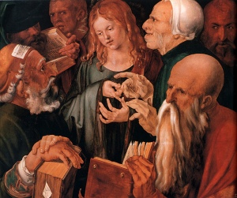

Sacred Texts Bible
Buy this Book at Amazon.com
|
(Public Domain Image)" />
Christ Among the Doctors, by Alberecht Duerer [1506] (Public Domain Image) |
The Complete Sayings of Jesusby Arthur Hinds[1927] |
Like the Jefferson Bible, this is an attempt to edit the four gospels into a consistent account, in this case focusing on the words of Jesus. There is plenty of connecting narrative around the instances where Jesus speaks, so this is better than simply presenting each quote out of context. The focus on what Jesus is attributed as saying makes it easier to browse the core texts of the New Testament. All in all, a very useful reference, and a great read.
PRODUCTION NOTES: In this etext, Jesus' words are highlighted in blue, slightly larger text. The date and age information was extracted from the copytext page headers and moved into the file title area in the online edition.